Knobs
| Qty | Size (inches) | Size (metric) | Description | Used for: | Picture
| 5 | 1/4" | M6 | Threaded pastic knob | Template attachment(2) | Depth stop clamps (2) Follower clamp (1) Could substitute wingnuts (cheaper). 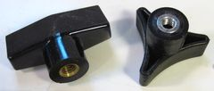
| 1 | 5/16" | M8 | Threaded pastic knob | Fence lock (1)
| Machine screws and nuts
| Qty | Size (inches) | Size (metric) | Description | Used for: | Picture
| 2 | 5/16 x 2" | M8 x 50 mm | Carriage bolt | Fence holddown(1) | 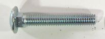
| 1 | 5/16 x 2.5" | M8 x 60 mm | Carriage bolt | Fence holddown
| 2 | 1/4" x 1 1/2" | M6 x 40 mm | Carriage bolt | Depth stop clamps
| 1 | 1/4" x 1.5" | M6 x 40 mm | hex bolt | Follower clamp
| 1 | 3/8" x 5" | M10 x 120mm | carriage bolt | Holddown attachment | 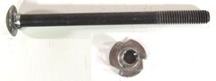
| 1 | 3/8" | M10 | T-nut | For holddown clamp
| 16 | #8-32 x 3/4" | M4 x 18 mm | Machine screws | with countersink head To attach drawer slides
| 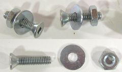
| 16 | #8-32 | M4 | Nut | To attach drawer slides with
|
| 3 | 1/4" x 3 1/8" | M6 x 80 mm | knock down screw | Template holders (2) | plunge lever elbow (1) 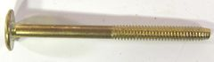
| Washers
| Qty | Size (inches) | Size (metric) | Description | Used for: | Picture
| 4 | 1 1/4" | w. 5/16" hole. 32 mm | Washer | Template mount (2), plunge lever (1), | Fence (1) 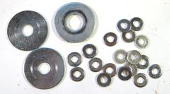
| 17 | 3/4" | w. 1/4" hole 18 mm | w. 6 mm hole Washer |
For mounting drawer slides (16) | Plunge lever mount spacers (1) Wood screws
| Qty | Size (inches) | Size (metric) | Description | Used for: | Picture
| 32 | 2" | 50 mm | drywall screws |
Table attachment (12) | Pantograph mount attach(8) Template frame attachment (8) Plunge stop mount (4) 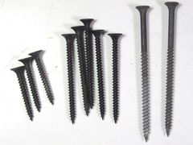
| 20 | 1.25" | 30 mm | drywall screws |
Plunge stop mount (2) | Hold springs (2) Follower clamp mount (2) Hold dust covers (4) Attach spring cam to long link (2) Attach router shafts (8) 2 | 1.5" #10 | 40 mm | #10 countersink wood screw |
Attach srping to spring cams (2)
| 4 | 2.5" #12 | 50 mm | #12 countersink wood screw |
Plunge lever mount (1) | Plunge lever link mount (1) Operator handle knob (1) 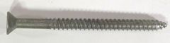
| Miscellaneous
| Qty | Size (inches) | Size (metric) | Description | Used for:
| 1 | | Electrical switch | and socket A switch that allows you to control power to the router
| 1 | 1/4" | 6 mm x 400 mm long | steel shaft | Mount for depth stops | (could also use 1/4" for this) 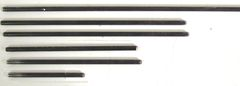
| 1 | 1/4" | 6 mm x 282 mm long | steel shaft | Pantograph main shaft
| 1 | 3/16" | 5 mm x 182 mm long | steel shaft | Pantograph short link to router link
| 2 | 3/16" | 5 mm x 157 mm long | steel shaft | Pantograph shafts in operating lever.
| 4 | 1/4" | 6 mm x 157 mm long | steel shaft | Shafts for making followers
| 2 | ???" | ?? mm x 200 mm long | steel shaft | Match holes in your router, for mounting the router
| 2 | 7 1/2" | 19 cm | Tension springs made of 2.0 mm thick | wire. Coil outside diamter is 19 mm, coiled part is 150 mm long unstretched. I got mine from Lowes.
To counteract weight of router | Lowes (US and Canada) has a good selection of springs, including this size. 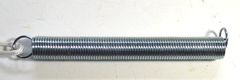
| 2 | 6" | 15 cm | Length of string | To attach springs to spring cams | 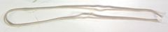
| 1 | 2" | 50 mm | C-clamp | Cut up to make holddown clamp
| 2 | 18". | 45 cm | Modified center drawer slides. You can also
| use keyboard slides or older style double tiered full extension slides. For plunge mechanism. | 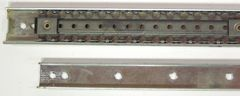
| 1 | 1/2" o.d. | | Ball bearing | To use with 1/4" router bit | 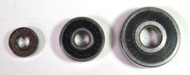
| 1 | 3/4" o.d. | | Ball bearing | To use with 3/8" router bit
| 1 | 1" o.d. | | Ball bearing | To use with 1/2" router bit
| | |||||||||||||||||||||||||
|---|---|---|---|---|---|---|---|---|---|---|---|---|---|---|---|---|---|---|---|---|---|---|---|---|---|---|---|---|---|---|---|---|---|---|---|---|---|---|---|---|---|---|---|---|---|---|---|---|---|---|---|---|---|---|---|---|---|---|---|---|---|---|---|---|---|---|---|---|---|---|---|---|---|---|---|---|---|---|---|---|---|---|---|---|---|---|---|---|---|---|---|---|---|---|---|---|---|---|---|---|---|---|---|---|---|---|---|---|---|---|---|---|---|---|---|---|---|---|---|---|---|---|---|---|---|---|---|---|---|---|---|---|---|---|---|---|---|---|---|---|---|---|---|---|---|---|---|---|---|---|---|---|---|---|---|---|---|---|---|---|---|---|---|---|---|---|---|---|---|---|---|---|---|---|---|---|---|---|---|---|---|---|---|---|---|---|---|---|---|---|---|---|---|---|---|---|---|---|---|---|---|---|---|---|---|---|---|---|---|---|---|---|---|---|---|---|---|---|---|---|---|---|---|---|---|---|
Notes: